{kind=link}
5.286. nvalue
| DESCRIPTION | LINKS | GRAPH | AUTOMATON |
- Origin
- Constraint
- Synonyms
, .
- Arguments
- Restrictions
- Purpose
is the number of distinct values taken by the variables of the collection .
- Example
-
The first constraint holds since its first argument is set to the number of distinct values occurring within the collection .
The second constraint holds since its first argument is set to the number of distinct values occurring within the collection .
The third constraint holds since its first argument is set to the number of distinct values occurring within the collection .
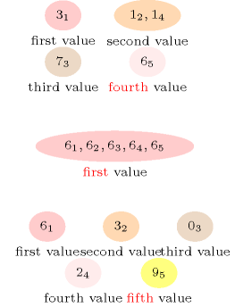
- All solutions
Figure 5.286.1 gives all solutions to the following non ground instance of the constraint: , , , , .
Figure 5.286.1. All solutions corresponding to the non ground example of the constraint of the All solutions slot
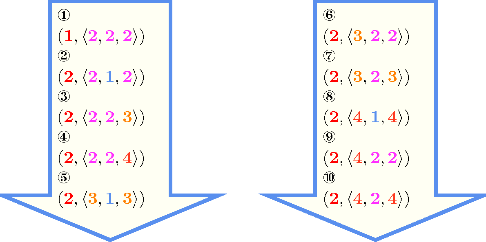- Typical
- Symmetries
Items of are permutable.
All occurrences of two distinct values of can be swapped; all occurrences of a value of can be renamed to any unused value.
- Arg. properties
Functional dependency: determined by .
Contractible wrt. when and .
Contractible wrt. when .
- Usage
The constraint allows relaxing the constraint by restricting its first argument to be close, but not necessarily equal, to the number of variables of the collection.
A classical example from the early 1850s is the dominating queens chess puzzle problem: Place a number of queens on an by chessboard in such a way that all cells of the chessboard are either attacked by a queen or are occupied by a queen. A queen can attack all cells located on the same column, on the same row or on the same diagonal. Part (A) of Figure 5.286.2 illustrates a set of five queens which together attack all of the cells of an 8 by 8 chessboard. The dominating queens problem can be modelled by just one constraint:
We first label the different cells of the chessboard from 1 to .
We then associate to each cell of the chessboard a domain variable. Its initial domain is set to the labels of the cells that can attack cell . For instance, in the context of an 8 by 8 chessboard, the initial domain of will be set to {2,5,8,11,13,15,20..22,25..32,36..38,43,45,47,50,53,56,57,61} (see the green cells of part (B) of Figure 5.286.2).
Finally, we post the constraint where is a domain variable in that gives the total number of queens used for controlling all cells of the chessboard. For the solution depicted by Part (A) of Figure 5.286.2, the label in each cell of Part (C) of Figure 5.286.2 gives the value assigned to the corresponding variable. Note that, since a given cell can be attacked by several queens, we have also other assignments corresponding to the solution depicted by Part (A) of Figure 5.286.2.
Figure 5.286.2. Modelling the dominating queens problem with a single constraint; (A) a solution to the dominating queens problem, (B) the initial domain (in bold) of the variable associated with cell 29: in a solution the value assigned to the variable associated with cell represents the label of the cell attacking cell (i.e. in a solution one of the selected queens is located on cell ), (C) the value of each cell in the model with one single constraint corresponding to the solution depicted in (A).
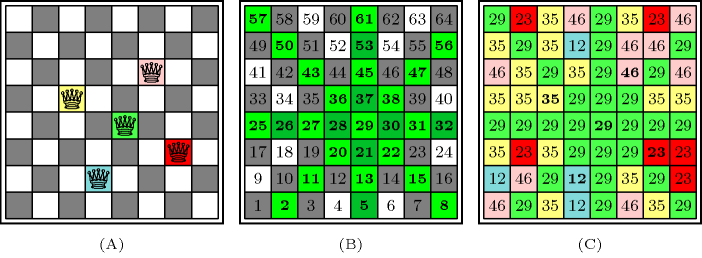The constraint occurs also in many practical applications. In the context of timetabling one wants to set up a limit on the maximum number of activity types it is possible to perform. For frequency allocation problems, one optimisation criterion is to minimise the number of distinct frequencies that you use all over the entire network.
The constraint generalises several constraints like:
- Remark
This constraint appears in [PachetRoy99] under the name of Cardinality on Attributes Values. The constraint is called in JaCoP (http://www.jacop.eu/). A constraint called enforcing that a set of variables takes at least distinct values appears in the PhD thesis of J.-C. Régin [Regin95].
It was shown in [BessiereHebrardHnichWalshO4] that, finding out whether a constraint has a solution or not is NP-hard. This was achieved by reduction from 3-SAT. In the same article, it is also shown, by reduction from minimum hitting set cardinality, that computing a sharp lower bound on is NP-hard.
Both reformulations of the constraint and of the constraint use the constraint.
- Algorithm
A first filtering algorithm for the constraint was described in [Beldiceanu01]. Assuming that the minimum value of variable is not constrained at all, two algorithms that both achieve bound-consistency were provided one year later in [BeldiceanuCarlssonThiel02]. Under the same assumption, algorithms that partially take into account holes in the domains of the variables of the collection are described in [BeldiceanuCarlssonThiel02], [BessiereHebrardHnichKiziltanWalsh05].
- Reformulation
A model, involving linear inequalities constraints, preserving bound-consistency was introduced in [BessiereKatsirelosNarodytskaQuimperWalsh10CP].
- Counting
-
Length () 2 3 4 5 6 7 8 Solutions 9 64 625 7776 117649 2097152 43046721 Number of solutions for : domains
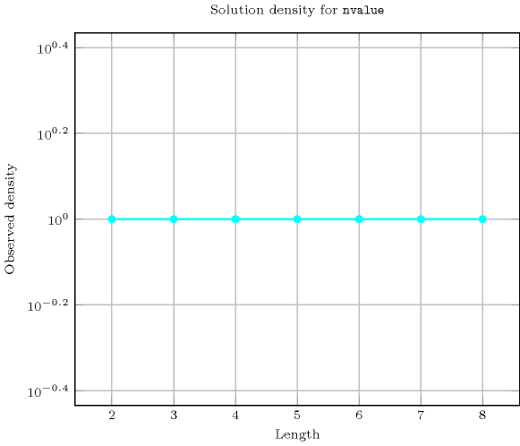
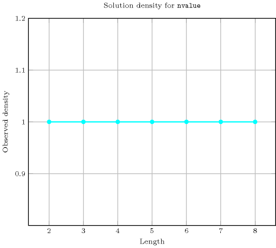
Length () 2 3 4 5 6 7 8 Total 9 64 625 7776 117649 2097152 43046721 Parameter value 1 3 4 5 6 7 8 9 2 6 36 140 450 1302 3528 9144 3 - 24 360 3000 18900 101136 486864 4 - - 120 3600 54600 588000 5143824 5 - - - 720 37800 940800 15876000 6 - - - - 5040 423360 16087680 7 - - - - - 40320 5080320 8 - - - - - - 362880 Solution count for : domains
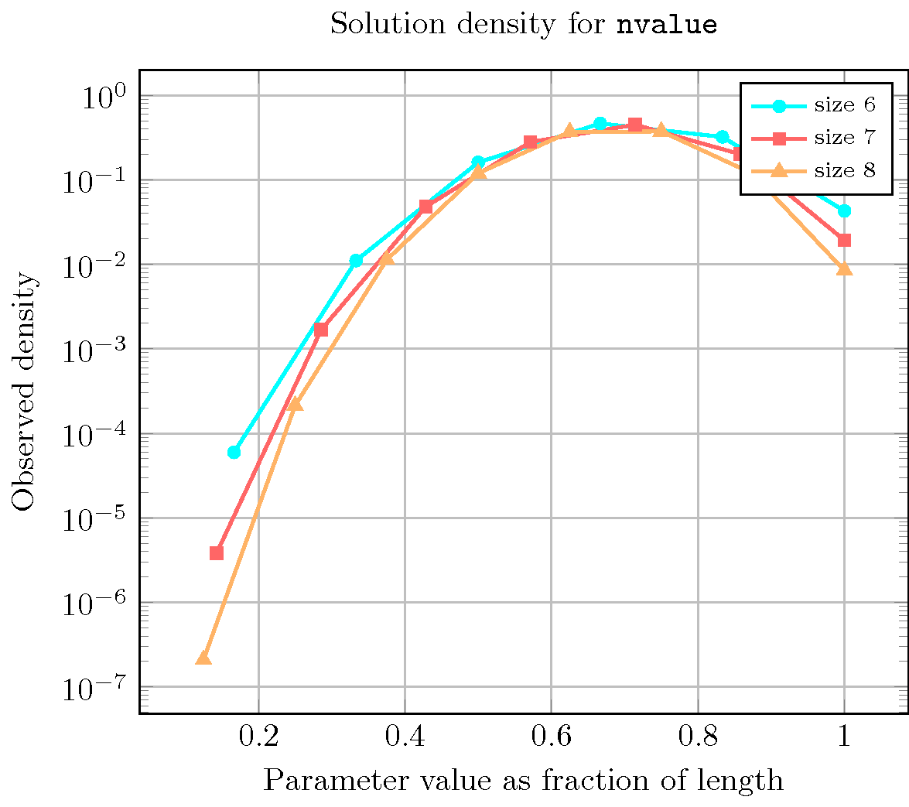
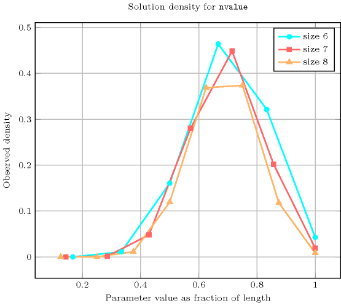
- Systems
- Used in
- See also
-
common keyword: , , , , , (counting constraint), (counting constraint,number of distinct values).
cost variant: (introduce a weight for each value and replace number of distinct values by sum of weights associated with distinct values).
generalisation: ( replaced by ), ( replaced by ), ( replaced by ), ( replaced by of ), (replace an equality with the number of distinct values by a comparison with the number of distinct values), (variable replaced by vector).
implies: ( replaced by ), ( replaced by ).
related: (restriction on how balanced an assignment is), (restrict number of distinct colours on each maximum clique of the interval graph associated with the tasks), (restrict number of distinct colours on each maximum clique of the interval graph associated with the tasks assigned to the same machine), , (necessary condition for two overlapping constraints), .
soft variant: (value 0 is ignored).
specialisation: (enforce to have one single value), (enforce a number of distinct values equal to the number of variables), (enforce to have at least two distinct values).
- Keywords
characteristic of a constraint: core, automaton, automaton with array of counters.
complexity: 3-SAT, minimum hitting set cardinality.
constraint arguments: pure functional dependency.
constraint type: counting constraint, value partitioning constraint.
filtering: bound-consistency, convex bipartite graph.
final graph structure: strongly connected component, equivalence.
modelling: number of distinct equivalence classes, number of distinct values, functional dependency.
- Cond. implications
- Arc input(s)
- Arc generator
-
- Arc arity
- Arc constraint(s)
- Graph property(ies)
-
- Graph class
-
- Graph model
Parts (A) and (B) of Figure 5.286.3 respectively show the initial and final graph associated with the first example of the Example slot. Since we use the graph property we show the different strongly connected components of the final graph. Each strongly connected component corresponds to a value that is assigned to some variables of the collection. The 4 following values 1, 3, 6 and 7 are used by the variables of the collection.
Figure 5.286.3. Initial and final graph of the constraint


(a) (b)
- Automaton
Figure 5.286.4 depicts the automaton associated with the constraint. To each item of the collection corresponds a signature variable that is equal to 0.
Figure 5.286.4. Automaton of the constraint
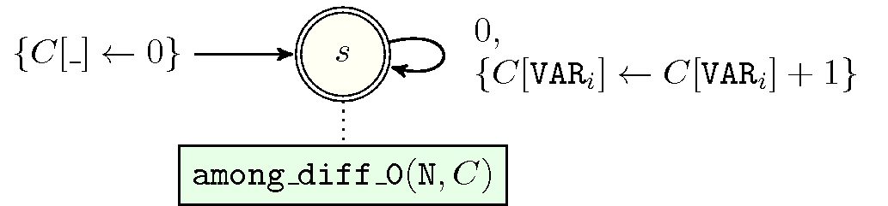- Quiz
: checking whether a ground instance holds or not 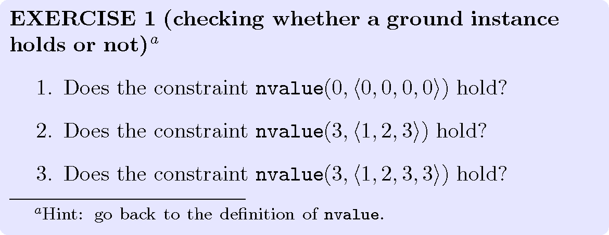
: finding all solutions 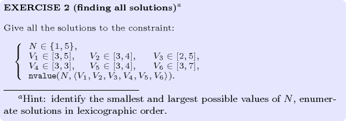
: identifying infeasible values wrt the at most side 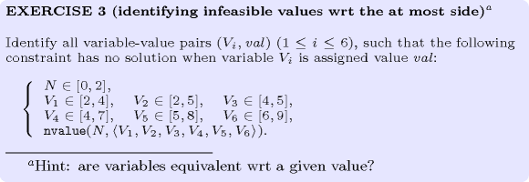
: identifying infeasible variable-value pairs wrt the at least side 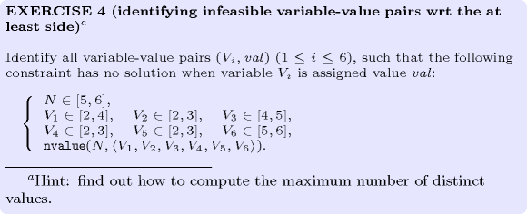
: variable-based degree of violation 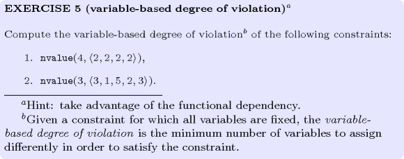
: variations of dominating knights 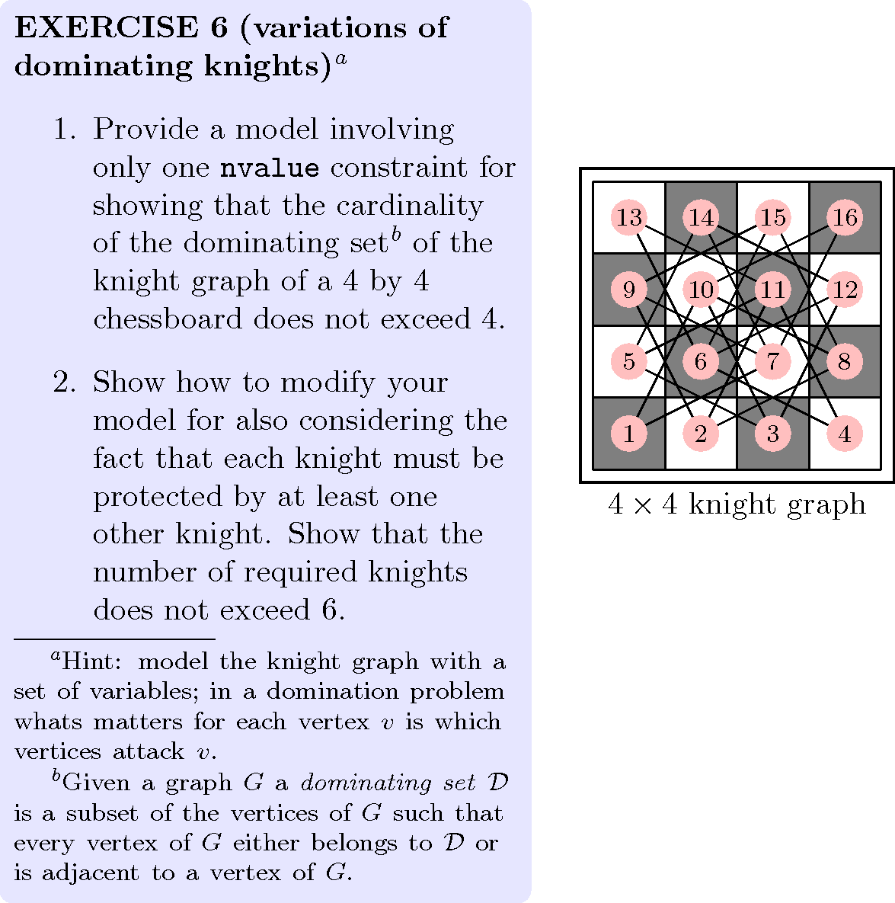
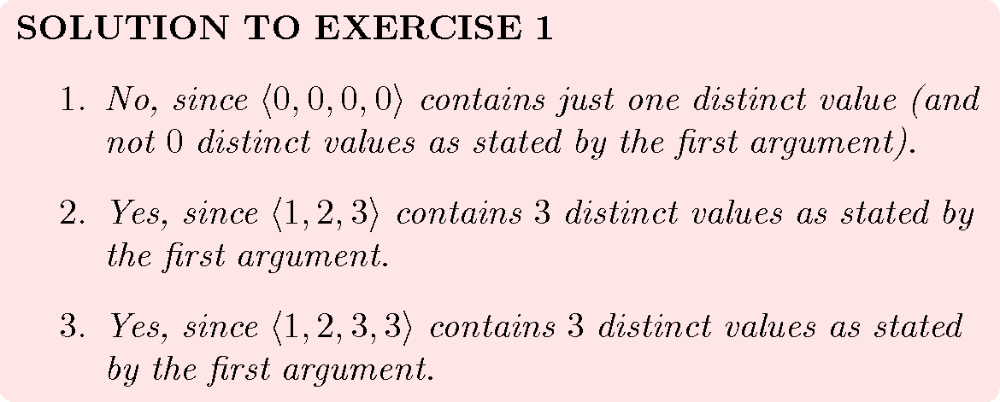
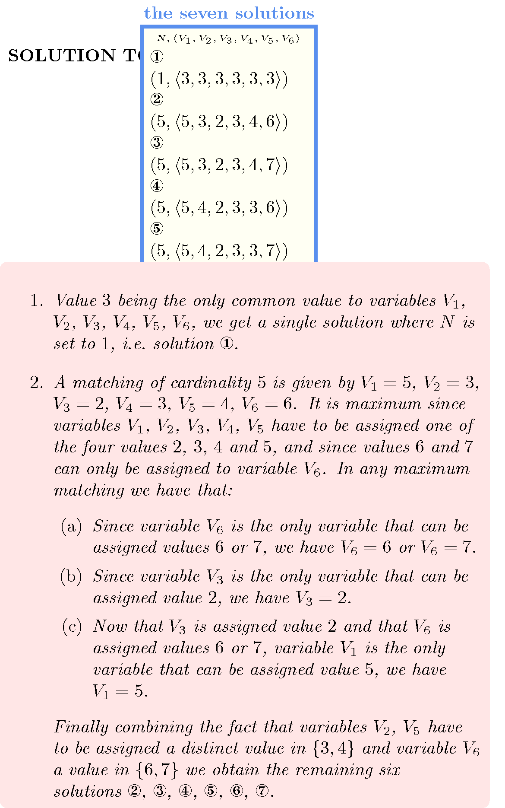
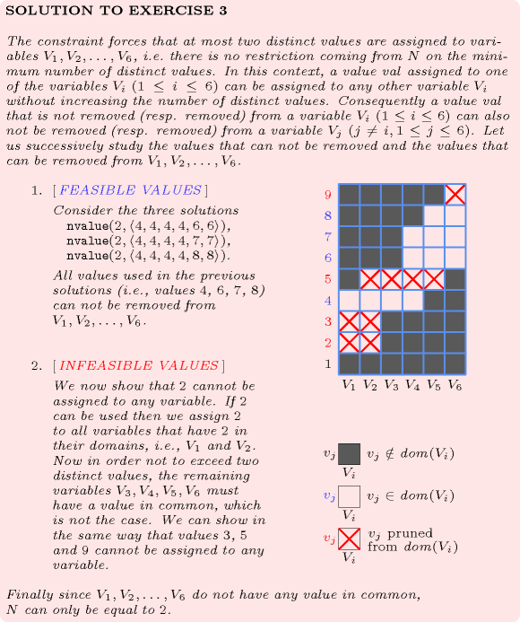
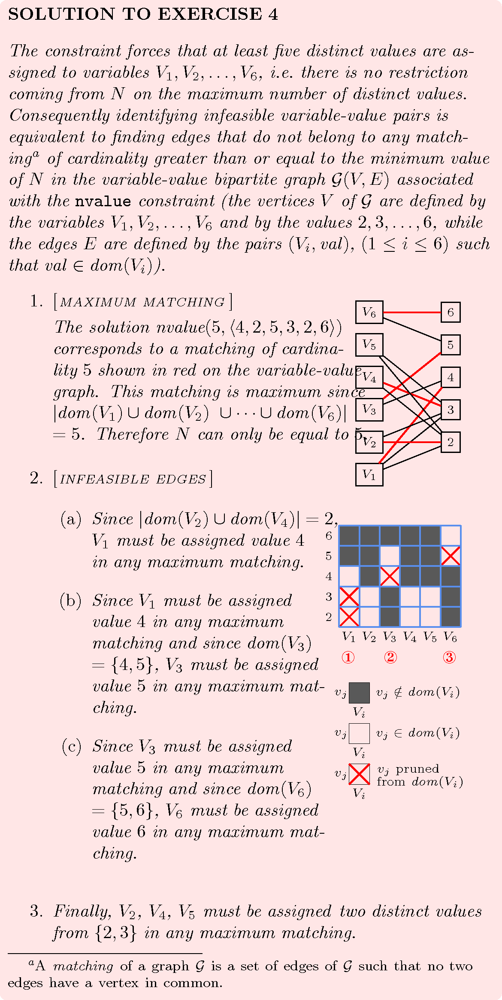
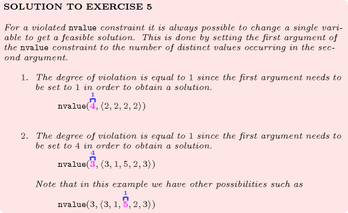
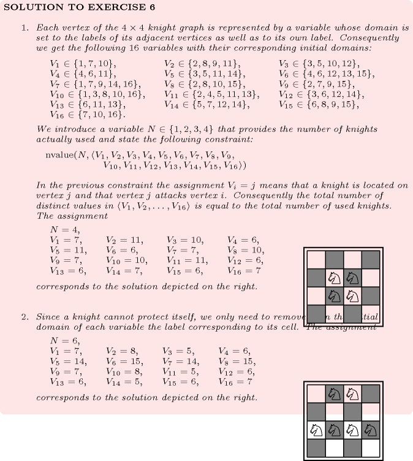